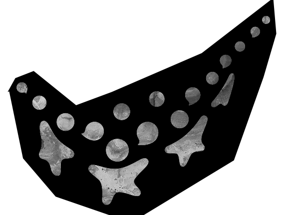
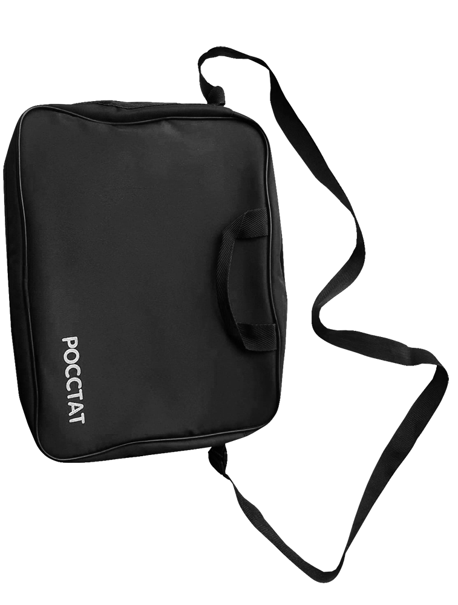
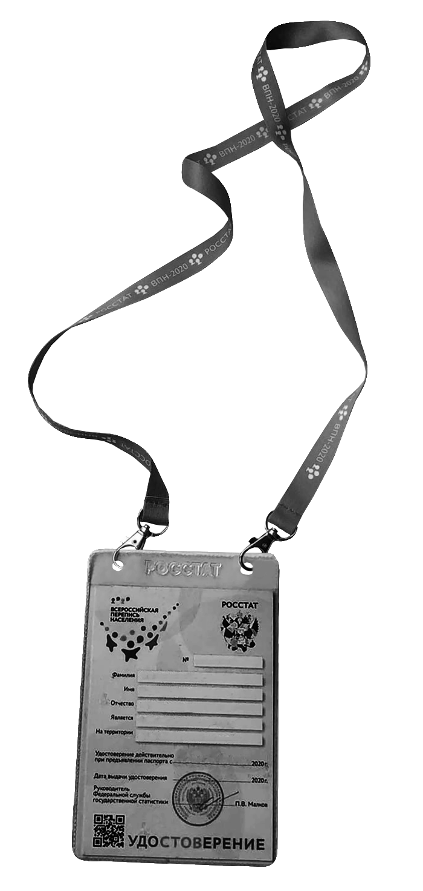
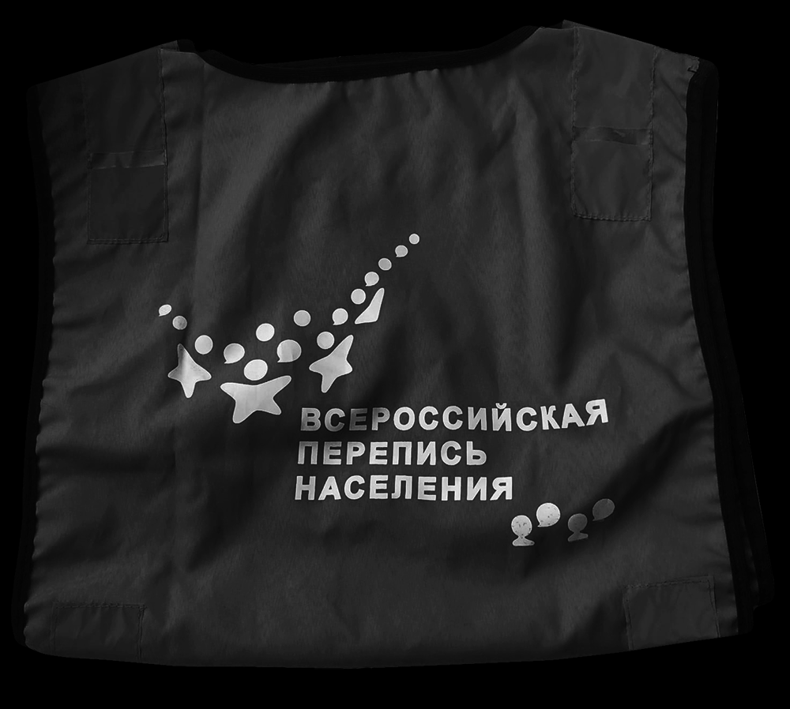
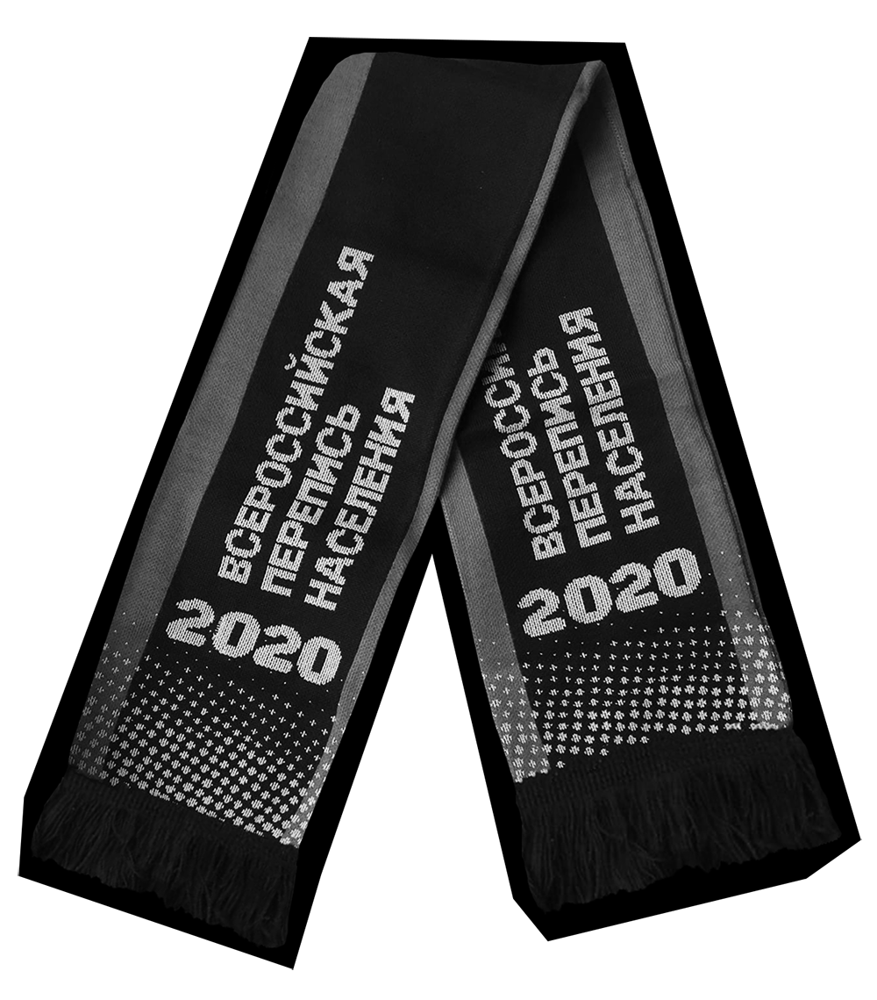
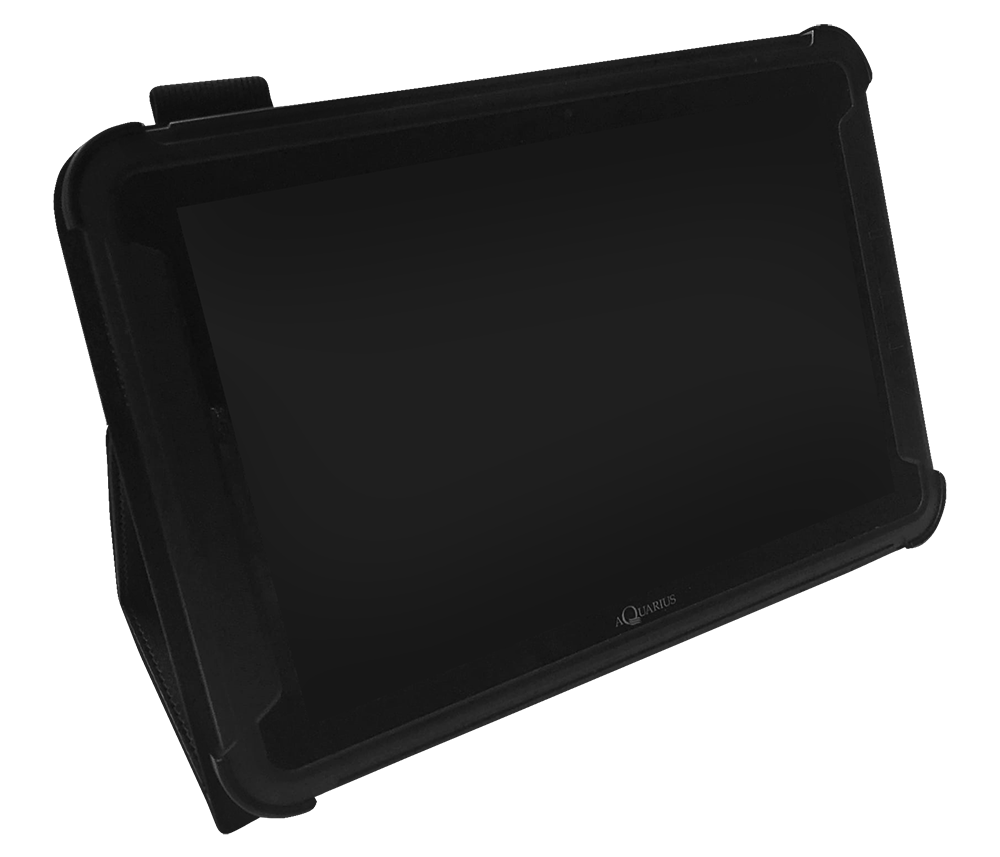

ИВАНОВСКИЙ
ГОСУДАРСТВЕННЫЙ
УНИВЕРСИТЕТ
2021 STUDENЬ
ВСЕРОССИЙСКАЯ
ЛЕНИЯ
#
ПЕРЕПИСЬ
ВЕРОНИКА СМИРНОВА
КАК СТУДЕНТУ ЗАРАБОТАТЬ
15 ТЫСЯЧ РУБЛЕЙ ЗА МЕСЯЦ
/ 15.10.2021
     С 15 ОКТЯБРЯ ПО 15 НОЯБРЯ
По всей стране, в каждом уголке России проходит перепись
населения, целью которой является собрать наиболее
полные данные о том, кто и как живет в России, об условиях
проживания россиян, их уровне образования, владении
языками, национальности и семейном положении.
Изначально она должна была состояться еще в начале 2020
года, но из-за внезапной вспышки коронавирусной инфекции
и последующей пандемии данное мероприятие откладывалось
до лучших времен. В это время по всей стране набирали
огромное количество переписчиков и контролеров.
Перепись переносилась несколько раз
Официально набор людей закончился 14 октября
Благодаря этому можно заработать в разы больше
Однако случаются непредвиденные обстоятельства: например, кто-то
отказался либо не смог приступить к работе из-за болезни, семейных
обстоятельств и других причин. Поэтому администрация вправе
возобновить поиск желающих, а Вы можете здесь проявить инициативу.
Очень часто бывает так, что переписчиков не хватает, остаются
свободные участки, и поэтому Вам могут предложить взять еще один.
Следовательно, заплатят Вам за несколько. Однако стоит рассчитать
свои возможности, прежде чем согласится на дополнительную работу.
Подумайте несколько раз, сможете ли Вы это осилить.
В ЧЕМ СУТЬ РАБОТЫ?
К Вам прикрепляют определенный участок, где
проживают около 500-550 человек, которых Вы должны
переписать в течение месяца. Если проживающих не
было дома, нужно прийти к ним еще два раза, либо
переписать со слов соседей, если есть такая
возможность. Если человек отказался от переписи,
стоит предложить переписаться через ГОСУСЛУГИ.
Повторно приходить к отказавшимся не нужно
ВЫДАЕТСЯ КОМПЛЕКТ ДЛЯ РАБОТЫ
Вместе с планшетом Вы получаете чехол для него,
переносное зарядное устройство и проводные
зарядки, удостоверение, жилет с эмблемой, шарф,
налобный фонарь для темного времени суток и
набор из пяти батареек, маски, перчатки,
антисептики, блокнот, ручки, а также сумку, куда
помещаются все принадлежности.
Участок можно пройти быстрее, чем за месяц
У такой подработки есть свои недостатки
Придется много ходить: от квартиры к квартире, от дома к
дому, с одного этажа на другой. Все время Вы находитесь на
ногах – не каждый сможет это выдержать.
2
Это достаточно опасная работа. Кто знает, что ждёт тебя за
очередной дверью или за углом? Из-за яркой одежды Вы
можете привлечь излишнее внимание.
4
ЗА ПРИМЕРОМ ДАЛЕКО ХОДИТЬ НЕ НАДО
Произошла неприятная ситуация во время переписи,
исход которой мог бы быть плачевным
Все бы ничего, если бы он просто прошёл
мимо, но данный индивид начал преследовать
переписчицу, что-то кричать ей. Из-за чего ей
пришлось прекратить работу и срочно
ретироваться на соседнюю улицу, дабы
избежать опасного столкновения с явно
неадекватной личностью.
КАК ПОЛУЧИТЬ ДЕНЬГИ?
После окончания переписи полученные данные изучаются в течение
десяти дней. Как только проверка заканчивается, начинаются выплаты
на Вашу карту, реквизиты которой Вы указывали в договоре. Перевод
должен поступить в течение десяти дней после проверки. Получается,
что где-то в начале декабря все переписчики получат вознаграждение
за проделанную работу.
Любой желающий в
своем городе мог
поучаствовать в данной
программе и заработать
определенную сумму:
ДЛЯ ПЕРЕПИСЧИКОВ
– 15 660 рублей
ДЛЯ КОНТРОЛЕРОВ
– 33 000 рублей
Посреди дня, время было около двух часов, в
частном секторе из-за поворота «выруливает» не
совсем адекватный молодой человек. Его шатало
из стороны в сторону, он совершал непонятные
действия (мычал, что-то бубнил, надевал маску на
одно ухо и дергал ее в разные стороны) – в общем,
создавал впечатление человека «под чем-то».
Если, прочитав все недостатки, Вы все равно хотите попробовать
себя в подобном роде занятий, то найдите в Интернете информацию,
как в Вашем регионе можно устроиться переписчиком. К слову,
перепись населения проводится раз в десять лет.
Необходимо будет контактировать с большим количеством
незнакомых людей, некоторые из них могут проявлять
агрессию: нецензурно выражаться, кричать и возмущаться.
Поэтому если у Вас возникает паника при общении с людьми,
то, скорее всего, работа переписчиком Вам не подойдет.
Погодные условия в октябре-
ноябре не всегда благоприятные:
дождь, снег, слякоть и лужи – все
это может препятствовать
нормальной работе. Вам повезет,
если на Вашем участке будут
многоквартирные дома, где в
подъезде не так мешает дождь на
улице. А что если попадется
частный сектор? Теплая одежда,
зонт и дождевик Вам в помощь.
1
3
Вполне возможно «закрыть» его за неделю, работая 2-3 часа
ежедневно. Преимущество данной работы заключается в
свободном графике: когда появляется возможность и
свободное время, тогда и выходи на перепись – именно
поэтому данная подработка (которая, кстати, полностью
официальная) отлично подойдет для студентов.
Паспорт СНИЛС ИНН Реквизиты
Перед тем, как приступить к переписи, Вы оформляете
договор, где указываете следующие данные:
Всю информацию необходимо заносить в планшет,
который выдается во время обучения. В нем есть все:
список домов с возможностью просмотра по карте,
GPS, дополнительные комментарии (например,
нежилой дом, без таблички, количество подъездов и
т.д.), сами анкеты и возможность оставлять пометки.

ВЕРОНИКА СМИРНОВА
www.strana2020.ru
/ 15.10.2021
ЛОГОТИП ВПН ВЗЯТ С:
ИВАНОВСКИЙ
ГОСУДАРСТВЕННЫЙ
УНИВЕРСИТЕТ
2021 STUDENЬ